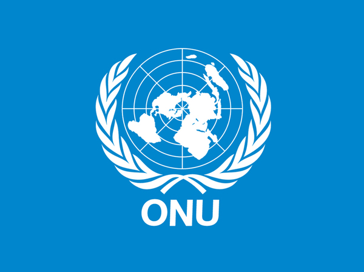

OBJETIVOS DE DESENVOLVIMENTO SUSTENTÁVEL
Conheça as 17 metas globais para transformar o nosso planeta até 2030


O que são as ODS?
Os Objetivos de Desenvolvimento Sustentável (ODS) são um apelo global da ONU à ação para acabar com a pobreza, proteger o meio ambiente e o clima e garantir que as pessoas, em todos os lugares, possam desfrutar de paz e de prosperidade.
Saiba mais na ONU
Por que participar?
Ao aprender e praticar ações ligadas às ODS, você ajuda a construir um futuro mais sustentável para a sua comunidade. No Cultivando o Saber, cada missão cumprida acumula pontos de XP e ajuda a preservar o planeta!
Começar Missão